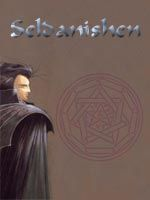

Guildes
Orphelins de Hyjal (Les)
Ancalhimë
Sexe : FemmeRace : Elfe
Faction : Alliance
Formation : Voleur
Plus d'infos sur Ancalhimë >>>
Chrysaël
Sexe : HommeRace : Elfe
Faction : Alliance
Formation : Voleur
Plus d'infos sur Chrysaël >>>
Daexian
Age : 217Sexe : Homme
Race : Elfe
Faction : Alliance
Formation : Druide
Plus d'infos sur Daexian >>>
Seldanishen Windwhispers
Age : 270Sexe : Homme
Race : Elfe
Faction : Alliance
Formation : Druide
Description : Seldanishen Windwhispers
Seldanishen a servi pendant les trois guerres, au meme titre que nombres de ses compatriotes, sous les ordres du druide fandral. Durant la troisieme guerre, à la bataille du mont Hyjal, lui et ses hommes ont été envoyés en mission pour les druides mais du fait de differents entre certains druides au commandement ( les tensions entre les druides du cercle de cenarius et ceux qui dirigent darnassus ont toujours existé) leur mission a été un echec et de nombreux braves perirent pour rien. Ne voulant pas endosser la responsabilité de cet echec Fandral pretexta une trahison de Seldanishen et le fit marquer de la marque de l infamie (d ou un masque en permanence sur le visage pour cacher cette marque qui ressemble a une cicatrice sur le bas du visage). Seldanishen fut ensuite banni et interdit de sejour sur les terres des elfes de la nuit. quelques temps et aventures apres, avec la monté des tensions avec la horde, Seldanishen put recommencer ses activités sur le sol de darnassus, les autorités ayant d autres chats a fouetter. il profita de cela pour rassembler des elfes de la nuit et monter les Orphelins de Hyjal, une guilde pour honnorer les esprits de ses amis tombés inutilement au combat et pour eviter que pareil abomination ne se reproduise
- Age moyen: 270 ans
- alliés: cercle de cenarius, toutes faction dissidente des elfes de la nuit desservant la lumiere et la nature
- ennemis: autorités de Darnassus, druides de Darnassus, archidruide Fandral
- alignement: loyal neutre
Plus d'infos sur Seldanishen Windwhispers >>>
Lire les 2 récits de Seldanishen Windwhispers >>>
Sinemelia
 Age : 258
Age : 258
Sexe : Femme
Race : Elfe
Faction : Alliance
Formation : Chasseur
Description : Descriptions :
Sinemelia est une elfe muette qui n'a pas pour autant "sa langue dans sa poche" ... une elfe très enjouée, rarement de mauvais humeur, mais quand elle l'est, ce n'est pas à moitié ... Suceptible mais très rarement rancunière, elle adore taquiner mais déteste l'être.
Quand elle veut quelque chose, elle ira jusqu'au bout pour l'avoir et ce n'est pas son handicap qui l'en empêchera.
Sinemelia porte aussi les marques d'une rude vie de combat :
-- Une première cicatrice horizontale, longue de 2 - 3 centimètres , très légère, sous son oeil gauche.
-- Quand elle ne porte pas ses gants (chose rare), on peut voir une grosse cicatrice sur le dos de sa main droite, comme si quelque chose lavait transpercé
-- Sur sa poitrine, passant entre seins, une grande cicatrice verticale, laissant penser qu'elle s'est pris un coup avec un objet bien tranchant.
-- Quand la situation le permet, on découvre une dernière cicatrice au niveau de son ventre, toute petite et bien refermé, souvenir d'une opération passée
.
Voici quelques traces écrites en Darnassien par Sinemelia, racontant son histoire
Prélude : La voie de Sinemelia
...
"Si je n'étais pas muette, on dirait que je suis bavarde. J'ai beaucoup de choses à dire, mais si peu de façon de l'exprimer s'offre à moi, alors je crois judicieux d'écrire un journal ... au cas où l'envie d'oublier tout ceci me vienne, un jour, à l'esprit ...."
A 120 ans passés, Sinemelia croit bien être passé par toutes les plus dures épreuves que pouvaient lui réserver la vie. Avec sa soeur Ankalia d'environ 100 ans son aînée, elle vivait dans l'insouciance la plus totale, malgré les ravages du Fléau. Elles avaient entendu parlé de la guerre, mais cela leur semblait si futil ... Jusqu'au jour où on frappa à leur porte.
Ankalia se précipita à la porte, croyant leur parents de retour du front, du Mont Hyjal, mais au lieu de cela, un cortège d'elfes, tous au ton plus grave les uns que les autres, leur apportaient, soigneusement pliées, 2 drapeau au couleur de la Nouvelle Alliance. Il n'en fallut pas plus à Ankalia pour tout de suite comprendre que ses parents étaient tombés au Mont Hyjal.
A première vue, Sinemelia semblait encaisser le choc, selon les dires d'Ankalia, mais en réalité, celle ci était plus pudique, et ne pleurait même pas en présence de sa soeur. Peu de temps après, la soeur de Sinemelia rejoignit l'Académie des Prêtresse d'Elune, décidée à protéger les idéaux de leur parents morts aux côtés d'orc.
Elle n'eut donc pas vent de ce qui se produisit par la suite avec le Général Proudmore, l'"incident" malencontreux mettant fin à l'éphémère paix entre Horde et Alliance, mais Sinemelia n'en manqua pas un mot, cette fois-ci. Bien que gentille, Ankalia était aussi bornée, et ne prit pas au sérieux la menace de guerre imminente avec la Horde, peu de temps après la tragédie du Mont Hyjal qui les avait approché. Cette divergence d'opinion sépara les 2 soeur, et ne garderont contact que par lettre.
Il était temps désormais à Sinemelia de faire entendre sa voix et de choisir sa voie.
Chapitre 1 : "Tu ne seras pas une guerrière !"
"Comment faire entendre une voie qu'on n'a pas ? Dilemne cornélien que je devais résoudre d'une façon ou d'une autre ... Je devrais exprimer mon opinion autrement que par les mots, comme ma soeur sera entraînée à faire, mais bien par les armes. Et c'est ainsi que ..."
Sinemelia tenta tout d'abord une entrée à l'Ecole Militaire de Darnassus, où l'on vous apprennait à devenir une machine de guerre elfique.
Elle passa avec brio toutes les épreuves d'admission avec ses frères et soeurs elfes : Test d'endurance, Mission de survie dans une partie hostile d'Ashenvale, et j'en passe. Cependant, la dernière, et non des moindres, lui claqua définitivement les portes à son nez : Le dernier test était tout simplement un entretien avec le responsable de l'Ecole, un face à face. Ce dernier avait la réputation d'être extrêment stricte dans le choix de ses guerriers, d'une part parce que cela lui plaisait, mais aussi pour être plus sélectif, car il savait que tout les jeunes aspirant guerriers était très bons, mais voila : Beaucoup d'appelés, mais peu d'élus.
A peine entrée, poignée de main qui lui broya presque la main, mais elle fit mine de rien, et elle l'écouta longtemps baratiner des choses qu'elle ne retenait qu'au cas où il lui poserai une question sur ce qu'il vient de dire.
A la fin, il lui demanda son avis sur le contexte géopolitique actuel, et quand elle sortit son crayon et son papier, prête à répondre, il la stoppa d'un geste :
"Ma petite, que faites-vous ? je vous ai demandé de répondre à ma question ?"
Elle resta un instant à le regarder, surprise, puis entama d'écrire quelque chose quand elle fit de nouveau stopper, cette fois-ci parce qu'il lui avait attrapé la main gauche, avec laquelle elle écrivait.
"Je veux vous entendre parler, pas dessiner ?"
Elle ouvra la bouche pour ne laisser sortir que de léger filet d'air sans consitance, sans consonne ni voyelles ... juste un souffle. Quand le chef comprit quelle fût son erreur de la croire juste réservée alors qu'elle était tout simplement muette, il fût pris de remords, sans le laisser paraître, car il savait désormais la seule chose qui lui restait à faire à cette brillante apprentie.
"Vous êtes muette alors ?" dit-il d'un ton plutôt commun
Sinemelia hocha la tête, avec un petit sourire, croyant que ce handicap ainsi révélé allait faire pencher la balance de son côté, alors qu'il en était tout à fait autrement.
"En avez-vous informé vos supérieurs ?"
Sinemelia haussa les épaules. Elle allait encore une fois se mettre à écrire quand elle fût encore stoppé.
"Désolée ma petite, mais tu t'arrêtes là."
Sinemelia semblait avoir pris un coup de poing dans le ventre ... Mais cela lui semblait être un fin trop irréaliste pour être pris au sérieux, alors de plus belle, elle se mit à écrire.
Pendant qu'elle écrivait, le chef en fit de même, alors elle s'arrêta, se posant des questions sur ce qu'il faisait, et attendait de pouvoir lire ce qu'il écrivait, si cela lui était destiné. Il posa son crayon avec un claquement sur la table et lui pointa la feuille touchant presque le nez de Sinemelia, qui dût légèrement reculer pour pouvoir lire. Le message était écrit en Darnassien, avec des trait grossier, écrit sous un accès de colère contrôlé, et qui ne laissait rien à répondre :
"Vous n'êtes pas acceptée !"
Elle crut recevoir un 2° coup de poing, bien plus violent et réel, accompagné d'une impression de chute libre interminable.
Dans un dernier élan d'espoir, elle tenta encore une fois de s'exprimer par papier interposé, mais il ne lui laissa même pas le temps d'écrire 2 mots qu'il prit le papier, le mit en boule et le jeta dans la corbeille.
"Je ne veux pas de guerriers muets ! Vous avez déjà vu ca ? Oui, alors dans vos rêves uniquement !"
Sinemelia fût choquée par un tel comportement : En plus de l'énorme déception d'être virée, il lui faisait l'affront de ne pas la laisser s'exprimer, ce qui était pire que d'être virée.
Intérieurement, elle était au bord des larmes d'avoir essuyée tant d'échecs et d'affronts après avoir autant travaillée, mais elle ne voulut rien laisser paraître, et se dirigea tout simplement, et lentement, vers la porte de sortie, en la fermant sans la claquer, ce qui laissait transparaître pour le chef qu'elle devait être énormément décue.
Pour la première fois depuis qu'il fait ce genre d'entretien, il avait été face à un dilemne, mais croyait avoir fait le bon choix ... pour lui et surtout pour elle. Il murmurra pour lui.
"Désolée petite, je fais ça pour ton bien..."
Sinemelia avait passé plusieur mois à l'Ecole Militaire de Darnassus en vain, et ne savait plus quoi faire pour exprimer son opinion ... Mais ce n'est que 3 semaines plus tard, alors qu'elle marchait quelque part à la lisière de Darnassus qu'elle croisa une apprentie chasseuse en train de dompter son premier familier, d'après l'excès de joie qu'elle laissait transparaître une fois le domptage finie ... Sinemelia y vit un échapatoire.
Chapitre 2 : Rencontre avec Ankalia la chouette
...
"Le temps me l'a appris par la suite, mais la personne même qui m'a renvoyé des guerriers a facilité mon entré dans l'école de chasseur, si bien que, ayant déjà suivi la rigoureuse préparation d'entrée à l'Ecole Militaire, entrer dans celle des chasseurs me parût d'une simplicité infantile, cepedant, il y avait une dernière chose, et non des moindres qui nous laissait accomplir seul : le choix d'un familier ..."
Après avoir fini sa part de travail quotidien auprès des habitants de Dolanaar, Sinemelia se dit qu'il était temps de se consacrer un peu à elle, surtout qu'elle venait d'atteindre le 10° cercle. Elle se souvint du dernier message laissé par son instructeur académique : "Le jour de votre passage au 10° cercle, allez voir Dalazar,le maître chasseur de Dolanaar ... C'est un de mes meilleurs apprenti qui vous apprendra l'art du domptage, élément clé du chasseur."
Elle avait déjà reperé Dalazar lors de sa première venue à Dolanaar, donnant déjà des quêtes initiatiques à ses aînés chasseurs, et elle le retrouva donc sans peine au même endroit que d'habitude.
"Je ne sais pas s'il m'a vu arrivé de loin, mais apparement, mon nom m'avait précédé ..."
Sinemelia s'approcha de Dalazar, et n'eut même pas le temps de faire quoi que ce soit qu'il l'interpella
"Vous devez être Sinemelia ... me trompe-je ?"
Elle hocha la tête.
"J'ai entendu parler de vous par mon maître, je connais aussi vos déboires à l'Ecole Militaire ..."
Elle resta perplexe, l'écoutant parler, ses traits tirés, comme redoutant une affreuse répétition du passée.
"... cependant vous avez été accepté en tant que chasseuse, et en tant que chasseuse ayant passer le 10° cercle, je vais vous lancer sur plusieurs quêtes initiatiques pour apprendre l'art du domptage de bête"
Sinemelia fût soulagée et écouta ce qu'il demandait de faire avec une grande sériosité.
Les quêtes initiatiques avaient pour but de l'accoutumer à l'art du domptage, et d'apprendre les divers points forts, et points faibles des créatures vivants sur Teldrassil, mais vint le moment de choisir son familier à vie.
Elle avait l'habitude d'aller pêcher dans le lac au sud de Dolanaar, s'étant persuadé qu'à coup sur, son familier serait un Dent de sabre, espèce commune de panthère sur l'Ile-Arbre, et qu'il raffolerait des poissons pêchés. Mais ce jour si, elle s'était plus éloigné vers l'ouest, près d'un camp de Furlbogs corrompus, qu'elle regarda, frustée d'être impuissante face à cette corruption. Elle aperçut l'un des Furlbogs courrir après une pauvre chouette, un Hurleur Strigid, avec quelques idées tordues derrière la tête, comme de la tuer par exemple.
Le Furlbog lui avait déjà arraché plusieurs plumes en tendant de l'attraper, et ce dernier empoigna son arme, ce qui ne laissait plus de doute à Sinemelia, qui ne put s'empêcher d'intervenir pou aider la chouette malmenée. Elle encocha une flèche et tira sans réfléchir, atteignant une première fois le Furlbogs dans le dos. Il poussa un cri mêlant douleur et colère, et chargea Sinemelia, laissant ainsi la chance à la chouette de s'enfuir à tire-d'aile. Elle élimina une bonne fois pour toute le furlbog, contente que l'hurleur se soit enfui.
Une semaine plus tard, en voyageant vers Darnassus, Sinemelia recroisa par hasard le chemin de l'hurleur strigid, encore au proie avec des Furlbog, qui cette fois-ci ne s'en prenait pas à la chouette elle même, mais à sa progéniture. Elle n'eut que le temps de voir des Furlbog jetter les oeufs à terre et les piétinant, pendant d'un autre tenait fermement à la chouette sous son bras, qui miaulait de désespoir. Bien qu'en surnombre cette fois, elle les attaqua, prise de colère face à cet acharnement qu'avait les Fulbogs sur la chouette.
La chouette se laissa faire quand Sinemelia la prit dans ses bras et l'amena avec elle à Darnassus : elle avait sur elle un sac contenant des pattes d'araignées comestibles qu'elle irait cuisiner pour la chouette.
Une semaine encore s'écoula, et Sinemelia et la chouette commencèrent à s'attacher l'un à l'autre. Elles allèrent ensemble se venger des Furlbogs coupables d'infanticides et les éliminèrent.
Après cela, Sinemelia pensa judicieux de passer à une étape au dessus : Asservir la chouette et en faire son familier, elle se dit que cela ne risquer pas d'être trop difficile. Mais la chouette ne se laissa pas faire : cela ne traduisait pas un signe de rebellion, mais plutôt un signe comme quoi il fallait la mériter.
Après plusieurs minutes d'un domptage violent qui laissa plusieurs cicatrices sur le corps dont une longue cicatrice sur son torse, passant entre ses seins (un coup de bec violent traversa armure et chemise), Sinemelia passa autour du cou de la chouette un petit médaillon sur lequel était gravé le nom qu'elle donnait à sa chouette : Ankalia, du nom de sa soeur.
Chapitre 3 : Les changements
"Même si au début la comparaison systématique avec ma soeur me plaisait, au bout d'un moment, on en a plein le dos d'être toujours rattachée à quelqu'un d'autre, et non être soi même ... A la limite, on m'aurait dit "Tiens, c'est Sinemelia, la chasseuse muette" au lieu de "Sinemelia, la soeur d'Ankalia", j'aurais plus apprécier, même si encore, je n'aime pas non plus qu'on me rattache à mon impuissance vocale. Ras le bol de toute cela ! Je décida de changer d'air !..."
Bien que ne parlant pas, Sinemelia faisait beaucoup de bruit autour d'elle, par l'influence de sa soeur prêtresse. Cela avait 2 effets : elle obtenait de l'aide plus facilement, puisque la renommée familiale lui était favorable, grâce à sa soeur toujours souriante et prête à aider. Mais le revers de la médaille, perdre toute crédibilité quand elle disait tout haut son déssacord avec sa soeur : elle était condamnée à devoir faire croire qu'elle pensait et agissait comme sa soeur, perdre son identité propre alors qu'elle et sa soeur sont totalement différentes. Autre avantage aussi fût qu'elle rencontra de bon contact qui l'aida à se construire une personnalité propre, et qui comprenait que 2 soeurs, gentilles toutes les 2, pouvaient être en total déssaccord entre elles. Dans l'ordre, il y eut : Naji, une druide exentrique et schizophrène, effet du à ses transformation mal maîtrissées, Koramech, un nain guerrier dont Sinemelia n'a plus eu de nouvelle depuis quelque temps mais qui détermina la suite des évènements, Isilwen, une elfe chasseuse juste un peu plus vieille qu'Ankallia qui prit vite sous son aile protectrice Sinemelia.
Koramech détermina un changement important dans la vie de Sinemelia : une fois ses travaux commencés à Auberdine finies, quitter Ashenvale et visiter le pays des nains.
Personne ne fût prévenue de son départ prévue mais tellement précipitée, et elle prit donc seule le bateau menant au port de Menethil. Plus effrayée qu'Ankalia à l'idée de la croisière, elle décida de mettre Ankalia pour la première fois en cage le temps du trajet. Voyage paisible sauf à "l'approche" du Maelstrom : Bien que très loin de leur position, on en ressentait pas moins les secousses. Sinemelia pensa alors quel enfer on pouvait y vivre à proximiter, et fut soulagée d'avoir mis Ankalia en cage.
A son arrivée à Menethil, elle ne resta qu'assez longtemps pour se préparer à traverser les marées : les renseignements qu'elle avait collecté parlaient de la présence de crocilisques aggressifs bordant la route menant au Loch Modan, et qu'ensuite, tout se simplifierai pour elle. Mais comme toute bonne chasseuse de son cercle, son pistage des animaux marchait à merveille, et sentait la présence hostile trop proche à temps pour les éviter, mais elle ne pouvait pas courir aussi vite sans l'aspect du guépard qu'elle ne maitrissait pas encore. Au Loch Modan, elle fit une halte rapide à Thelsamar, afin d'y assurer un retour paisible sur l'une des créatures volantes, ressemblant aux hyppogryphes mais n'en portant pas le nom. Une fin de voyage paisible en soit, à part une fièvre carabinée souvenir de sa traversée de marécages pourries des Paluns, mais elle était tout de même arrivée saine et sauve à Ironforge, l'ultime étape. Ankalia, trop stressée et trop apeurée par autant de monde, restait perché tout en haut d'Ironforge, manquant à plusieurs reprises de se prendre de plein fouet une des créatures volantes prenant leur impressionant envol. Sinemelia s'arrêta plusieurs jours dans une auberge de la ville fortersse, profitant de soigner sa fièvre pour visiter la bruyante ville des nains : Autant de petits hommes, une vision sortie d'un de ses rêves farfelus, mais cependant, la partie centrale restait un mélange éthnique impressionant aux nouveaux venus. Les nains, bien que moqueurs au premier abord, surtout avec les elfes, se montrèrent assez compréhensif à chaque fois qu'elle se rendait dans un magasin et qu'elle expliquait par papier ce qu'elle désirait.
Sinemelia tomba amoureuse de cette ville, même si elle n'avait rien à voir avec ses paisible forêt, mais c'est justement pour ça qu'elle aimait Ironforge, et elle voulut en apprendre tout les us et coutumes, réussit même à rencontrer le roi des nains, brièvement certe. Elle tomba aussi dans l'alcool, ce qui laissa quelques souvenirs intarissables pour ses compagnons de tavernes, pas forcément des nains. Elle restait des heures à contempler les squelettes reconstitués par les nains et exposés dans le Hall des Explorateurs, se demandant comment cela se produira quand elle rencontrera une de ses créatures, en chair et en os. Elle se rendit aussi voir le maitre des armes, dans la Garde Militaire.
Une gnome et un nain s'y trouvaient, et ne furent pas surpris de voir dans leur "boutique" une jeune elfe fraîchement sortie de sa forêt.
"Bonjour, Qu'puis-je fair' pou' vous ?" dit le nain d'une voix rocailleuse tout en se grattant la barbe.
Elle lui montra un des fusils accrochés aux murs. Le nain se retourna pour voir ce qu'elle montrait et comprit la requête, mais ne put s'empêcher de dire :
"Mouahaha, vous avez perdu votr' langue, p'tite ?"
Elle hocha la tête en souriant, ayant l'habitude de cette réflexion de la part des nains.
"Mouaah" dit il en tirant une grimace, comprenant qu'elle avait coincé dans sa propre tentative de déstabilisation. "Très bien, vous en aurez pour votr' argent ! Voyez avec ma collègue si un apprentissage aux autres armes vous intéresse"
Sinemelia sortit de la boutique avec la connaissance des fusil, et tenant justement dans sa main un fusil, et ne put s'empêcher d'aller tirer quelque coup de feu en dehors de la ville. Elle se rendit alors à Kharanos, où elle rencontra un nain qui lui demanda de ramener des côtes de sanglier et de la bière pour cuisiner l'ensemble : aussi tôt dit, aussi tôt fait , elle put goûter à fabuleux mariage entre viande et alcool, étant déjà assez pervertie par ce dernier pour en savourer l'ultime goût de la Côte de sanglier à la bière que certains n'auraient pas remarqué. Elle décida de devenir cuisinière pour elle aussi en faire ... noble raison en réalité ...
Abandonnant définitivement l'arc pour le fusil, devenue cuisinière accro à l'alcool, affranchie de l'influence de sa soeur, et en route pour le Loch Modan, Sinemelia fut ravie qu'autant de changements n'étaient pas forcément que contraintes, mais pouvaient être bénéfiques voir soulageants.
Chapitre 4 : Ankalia, inapte au combat
"Loch Modan a été la région de mon épanouissement, ainsi d'Ankalia, qui devenait plus qu'une "simple" meilleure amie à mes yeux, mais devenait mon complémentaire. Et la suite logique de mes aventures dans le Loch était les marécages des Paluns, même si je savais que j'allais tomber malade, ce qui arriva bien sûr, et tout semblait aller pour le meilleur des mondes pour Ankalia, malgré ma grosse fièvre qui revenait... Mais une lettre a suffi pour boulverser notre équilibre ..."
Un matin, Sinemelia recut une lettre cacheté d'un sceau qu'elle ne connaissait pas, mais qui lui parut clair : c'était une convocation militaire. Elle sort sa dague et décachte l'enveloppe, pour en sortir religieusement le papier à l'intérieur.
Tout en le lisant, Sinemelia arriva à se souvenir de quelques détails sur l'expéditeur : L'Aile Argent, un contingent elfique rattaché au commandement de Darnassus par un lien politico-hiérarchique qui dépasse l'entendement de la jeune elfe, mais dont elle sait que leur but est de défendre coûte que coûte ce qui peut encore l'être à Ashenvale, l'ancienne terre des Elfes de la nuit.
Encore à cette époque, car elle est révolue d'une certaine façon, Sinemelia aurait été prête à sauter sur n'importe quel ennemi de l'Alliance passant à côté d'elle, alors son sang ne fit qu'un tour quand elle comprit qu'on l'invitait à prendre part à une bataille imminente, juste le temps de s'y rendre. Elle fit vite fait ses bagages, contente d'aller se battre, mais peu ravie de devoir reprendre le bateau.
2 jours plus tard, elle se retrouvait au garde-à-vous, dans un rang composé de 10 personnes, des mercenaires pour la plupart, toutes différentes des unes des unes, d'abord par la race, évident à voir, mais aussi par la classe d'appartenance où il fallait plutôt observé la façon dont se vetissaient, et s'armaient les gens ...
"Je ne m'attarde pas sur les ordres de mission, l'équipe avec qui j'étais sur le moment, mais que je n'ai jamais revu par la suite, mais ce qui se passa à un certain moment de la bataille m'interesse le plus. Je replante le décor : un détachement de 10 novices, nous, retrouvés balancé sur un terrain étant définie selon le briefing "un sentier paisible pour se rendre à la scierie de la Horde afin d'y dérober des documents importants pour l'Alliance". Sauf que voilà : la Horde avait renforcé sa défense dans la scierie, et la mission tranquille se transforma en une mission impossible ..."
Un gnome de l'équipe avait eu la brillante idée d'hurler aux portes de la scierie pour une raison inconnue ... une idée gnomesque encore une fois, mais qui lui coûta la vie lorsque la Horde se rua vers lui, et moi, courageuse mais non suicidaire, avait fait signe à Ankalia de s'envoler très haut, me camouflait. Peut être était-ce pour détruire notre base, mais il semblait que le détachement de la Horde faisait le même genre de mission, heureusement, on pouvait compter sur une bonne défense parmi l'équipe.
Situation pittoresque : la Horde et l'Alliance attaquaient à tour de rôle, et Sinemelia fût à ce moment précis frappé par l'absurdité de cette bataille, et de la guerre en général, dégoûtée d'avoir voulu y participer... La bataille dura longtemps, trop longtemps pour une mission "tranquile", et l'unité décida un assaut général...
Dans un ultime effort, les prêtes soignèrent les blessures les plus graves, les chasseurs se réarmèrent en fléches et munitions, le guerrier se proposait comme forgeron de fortune pour aiguisser les lames de tout le mondes, et 10 minutes après, le commando était tous en route pour la scierie maudite, où la Horde avait décidé de se retrancher. Les lieux étaient connues maintenant, et ils entrèrent par toutes les passages possibles et inimaginables : Sinemelia et un autre chasseur réussirent à monter sur le toit de la scierie, 3 voleurs, dont le fameux gnome "mort" ...
"Oui, les Gardiens des Âmes se montraient même clément avec ceux qui se battaient sur les champs de batailles, même sitution pour la Horde, et maintenant que j'y pense, cette bataille aurait pu durer éternellement ! ..."
... se tenaient camouflé, et prêt à frapper dans la défense même. Le guerriers, les 2 paladins et les 2 prêtes attendaient dans le tunnel, et par une autre entrée qui permettaient de monter un peu en hauteur par rapport à la salle où se tenait toute la Horde pour protéger les documents, et ce qui permettaient à l'humaine mage d'avoir une vue rêvée sur eux ... Puis, les premiers tirent de la part des chasseurs, et un inplacable mécanisme se mit en route.
Sinemelia et l'autre chasseur se mirent à tirer à vue, sur la Horde qui ne pouvaient pas répliquer : seul un orc tenta de tirer à l'arbalète, mais Sinemelia en vint vite à bout. La mage se mit à lancer de puissantes boules de feu puis se cachait quand l'attention se tourna vers elle, et enfin, 2 voleurs entrèrent en scène, laissant le 3° encore invisibles aux yeux de la Horde. Le commando décida d'enfoncer encore plus le bouchon, et d'un accord commun mais invisible comme un message télépathique laissant transparaitre l'agrément de tous, le guerrier sortit de tunnel et entra en trombe dans la bataille, puis les 2 paladins aussi.
La Horde ne savaient plus où donnait de la tête, et il était temps d'en finir une bonne fois pour toute : Les 2 chasseurs sortèrent dans la salle transformée en arène, essayant tant bien que mal d'amortir leur chute, et priant de ne pas se casser une jambe à un moment si crucial, et escortèrent le 3° voleur qui avait profité du cafarnaum pour dérober les documents. Le voleur se mit à sprinter, et pour tenter de le suivre, les 2 chasseurs prirent leur aspect du guépard, et se sachant vulnérable à toute attaque, appelèrent leur familier pour les défendre de toute attaque.
Le trio passa à côté d'un orc qui venait d'être ramené à la vie ... le même orc que Sinemelia avait tué plutôt. Ankalia se jetta dessus, le voyant se préparer à tirer à l'arbalète : Coup de bec, coup de griffes, et même des coups d'ailes, rien ne lui était épargné. Elle reprit son envol quand elle sentit que Sinemelia était hors de portée de l'arbalétrier, mais l'orc rancunier lui tira un carreaux lui transpercant, de par en par, son aile gauche.
Sinemelia était à la moitié du chemin du retour. Ne voyant personne la suivre, elle comprit que les 2 familiers avaient bien fait leur travail, et s'attendait à voir Ankalia volée fièrement très haut dans le ciel ...
"Si haut que seule moi pouvait la voir voler à cette altitude ..."
... mais en tournant sa tête, elle vit une Ankalia qui peinait à voler, semblant "boiter" dans les airs, et retombait comme une pierre trop loin pour Sinemelia, mais trop proche à son goût d'un hordeux. Sans prévenir, elle fit un volte face qui suprit le voleur, mais que le chasseur, ayant aussi vu la scène, pouvait comprenre, et appréhendait en silence : la vie d'un familier vallait plus qu'une mission. Et heureusement ...
"Beaucoup de chance ce jour là ... d'une certaine manière ..."
... Sinemelia put évacuer Ankalia, sous son bras, vers la base.
Elle ne connaissait pas la raison exact qui poussa l'Aile Argent et son homologue hordeux dont le nom échappe toujours à Sinemelia de rentrer sur le champ de bataille ...
"Oui, on pouvait appeler ceci comme ca, à ce moment précis ..."
... mais Sinemelia sentait vaguement qu'il ne ferrait pas bon de rôder par içi dans les minutes qui suivirent. Elle eut juste le temps de voir les 2 factions se jettaient l'une sur l'autre, comme des bêtes enragés, aussi bien pour les orcs, que pour les elfes ... Une vision cauchemardesque, que Sinemelia voulait fuir au plus vite, pour le bien d'Ankalia.
Les blessures de Sinemelia semblaient être des égratignures à côté de l'énorme plaie ouverte sur l'aile gauche d'Ankalia. Elle poussa un cri muet de désespoir croyant qu'Ankalia allait perdre son aile, alors elle lui appliqua un bandage avce toute la douceur du monde, et évita l'antenne médicale, n'allant pas soigner ses propres blessures, pour se rendre auprès d'Isilwen, son amie chasseusse qui s'y connaissait bien en médécine animalière, et qui se trouvait à Darnassus.
Isilwen se trouvait exactement là où elle se trouvait d'habitude ...
"Heureusement ..."
... et regarda vite fait la blessure sous les bandages certe appliqué avec toute la douceur de Sinemelia, mais totalement inutile, comme le dit plus tard Isilwen.
Pendant tout le temps que dura l'examen, Sinemelia préfèra faire un tour dans la ville, et même un peu en dehors, à l'endroit de la rencontre ... Elle savait que les jours d'Ankali n'étaient pas en danger, mais l'idée d'une amputation probable de l'aile lui était pire que de la voir mourir, car ça aurait été la mort en permanence. Et c'est Isilwen qui vint la chercher aux portes de la ville, et l'emmena prêt da sa chouette.
Elle vit une araignée sur le chevet d'Ankalia, et fut pris de panique en pensant qu'un prédateur aurait senti la proie fragile, et le diner facil à travers Ankalia, couché dans un "nid" fait de draps par Isilwen. Sinemelia crut avoir une crise cardiaque, quand un main apaisantes se posa sur son épaule, et que Isilwen siffla l'araignée qui vint vers elle : Sinemelia n'avait pas reconnue Iwoo, l'araignée d'Isilwen, qui de plus est, est la meilleur amie d'Ankalia ...
"D'après leur comportement respectif l'une envers l'autre, Isilwe et moi avons conclues qu'elles étaient aussi proches l'une de l'autre que nous l'étions ..."
Isilwen fit faire un volte face à Sinemelia pour la ramener face à elle, et lui dit calmement :
"Ankalia est sortie d'affaire ... Sa blessure n'était pas si grave que ça, et s'en remettra vite, une histiore de quelques jours "
Sinemelia fût ravie, et commença à sourire de nouveau, mais Isilwen ajouta une phrase, avec un manque de tact que Sinemelia lui connaissait mais qui paraissait faire plus mal quand on en était la cible que quand on la voyait faire.
"Quand je dis dans quelques jours, c'est la date quand elle pourra de nouveau voler de ses propres ailes, mais de là à combattre, c'est une autre histoire ..."
Sinemelia resta à l'observer tremblant comme une feuille, puis chercha du regard ce qu'Isilwen lui donna presque tout de suite : du papier et un crayon. Elle écrit un message d'une main tremblante et le fit lire : "Tu es sûre ?"
Isilwen hocha gravement la tête
"Tu sais, les os d'Ankalia, comme de tout oiseaux, sont des os creux, et difficilement réparable par leur organisme. Elle pourra voler, mais plus de la même façon. Elle aura tendance à voler un peu penchée sur le côté gauche, et ne pourra très certainement plus prendre de l'altitude"
Les yeux argent de Sinemelia s'humidifièrent, les rendant encore plus scintillants, et Sinemelia plongea dans les bras d'Isilwen, sa seconde grande soeur en l'absence d'Ankalia, sa vraie soeur, pour y étouffer ses pleurs. Isilwen ne comprenanit que trop bien les larmes de Sinemelia à cette instant, et tout bon chasseurs; elfique, nain, orc tauren,ou même troll; l'aurait comprise à cette instant ...
"Et peut être même l'orc arbalétrier, qui était un chasseur ..."
... Quelques jours plus tard, Ankalia se revola de nouveau, mais plus comme avant, ce qui attrista Sinemelia malgré les prévoyance d'Isilwen. Elle ne savait pas ce que l'Aile Argent avait gagné de cette maudite mission, mais Sinemelia, elle, savait ce qu'elle avait perdu ...
Récemment, Sinemelia a écrit à la suite de ce récit
" ... Pour une raison que j'ignore, mais qui me ravie, Ankalia a repris le goût aux combats ... J'ai momentanément confié Delos à l'écurie pour me concentrer plus sur Ankalia, mon amie de toujours pour ainsi dire.
Je lui ai fais subir une remise à niveau rigoureuse tout en étant consciente de ne pas trop la surmener ... Désormais, le duo Sinemelia-Ankalia est de nouveau en scène ... "
Chapitre 5 : Mes amis les animaux.
...
"Quand les gens pensent à un chasseur, ils imaginent une personne toujours accompagné de leur animal de compagnie, passant la plupart de leur temps à amélorier leur relation avec leur compagnon à poil, à plumes, ou à écailles, mais quand vous savez à quel point les relations avec eux sont complexe, à quel point parfois on peut se comprendre juste en se regargant, vous comprendrez pourquoi on préfère rester des fois en tête à tête avec eux ... Prennons l'exemple des divers compagnons que j'ai pu avoir...
Elith ... Il était un jeune et fougueux worgen venant des alentours de Darkshire
La raison qui m'a poussé à le faire mien est double, si ce n'est triple : Son oeil terne semblable à des lumières mortes et son frêle corps malmené m'a laissé croire, à tort, qu'une vie en ma compagnie où il serrait mieux nourri et aurait une vrai raison de se battre, serrait mieux pour lui Et il me fallait un remplaçant pour Ankalia, qui était devenue inapte à combattre. Et une dernière chose, non des moindres mais surtout la plus inavouable, c'était qu'il me faisait pensé à une personne qui m'a été très chère, autant que ma soeur, même plus à l'apogée de notre relation. De jours en jours, le poil d'Elith retrouva son éclat d'ébène, ses yeux retrouvèrent leur vitalité et notre entrainement dans le Bois de la Pénombre, région où j'habitais à cette époque, se déroulait à merveille. Lorsqu'un matin, j'eût l'impression de revivre la même matinée que plusieurs années plutôt : Elith était parti sans laisser de traces ... triste ironie du sort ... Elith ... je leur faisais confiance à tous les deux, mais les 2 abusèrent de ma confiance, et plus, pour me laissèrent en plan ... Depuis, le seul loup que je tolère est Nindwe, celui d'Isilwen.
Delos ... Malgré son comportement clairement asocial, il est le seul à être resté aussi longtemps avec moi ... Mais si je parle de Delos, je dois aussi parler de Meleth, son frère jumeaux.
Ils étaient des pumas des plateaux arides des Terres Ingrates, ne se séparant jamais, ce qui est un fait rare chez cette espèce. Isilwen et moi avions eu le projet ambitieux d'aservir chacun le sien ... Tout se déroula bien sur le moment, mais la première séparation des 2 frères s'est fait sentir de nos 2 côtés, l'une d'une façon positive, et l'autre d'une façon négative; Isilwen n'eut aucun mal à apprivoiser et devenir l'ami du premier des frères, mais ce n'était pas mon cas. Mais une fois réunis, Isilwen remarquait de légers signe de rebellion, alors que je trouvais le mien plus calme que lorsqu'il était seul avec moi ... Isilwen appela son puma Meleth, l' "Amour" fraternel entre les 2 frères, et j'appela le mien Delos, la "Haine" qu'ils ont à l'égard de tout intrus dans leur vie (même nous !)
Mais les complications arrivèrent de façon sournoises : Delos et Meleth, séparés, exacerbés leur émotions caractéristiques, à savoir Delos devenait trop haineux et agressif, alors que Meleth devenait trop "mou" et trop "docile" pour le combat. Isilwen et moi nous étions demandés ce qui se passerait si jamais elles étaient confrontés seules avec leur félin respectif à des ennemis coriaces ... Delos mourrirait-il en voulant attaquer de tout les fronts en même temps ? Meleth se laisserait-il mourir dans son éternel confiance ? ... Nous décidâmes donc qu'il était préférable de les laisser seuls, à 2, et nous les relachâmes peu de temps après dans la même zone où nous les avions trouvé. Aujourd'hui encore, ils nous arrivent de parler des 2 frères.
Fairë ... Il est le compagnon le plus hétéroclite que j'ai eu. Je l'ai rencontré alors que je chassais en solitaire au Rocher des Sabres-de-Givre, le lieu de rassemblement de beaucoup d'une espèce local de tigre blanc ... Je n'étais pas accompagnée d'Ankalia, ce qui m'a peut être sauvée la vie, à vrai dire : alors que je croyais pister un des spécimens, je me rendais compte au dernier moment que c'était un des sabre-de-givre qui me suivait depuis un bon moment ... Ankalia n'étant pas là pour fondre sur le supposé hostil, voilà exactement ce qui me sauva la vie : le tigre ne me traquait pas, il me suivait simplement, probablement poussé par sa grande curiositée ... Je fus d'abord désemparée devant un tel comportement venant d'un tigre que je croyais hostile, mais le sachant toujours derrière moi depuis que je l'aperçus, je n'osa pas faire ce que j'étais venu faire au Rocher, c'est à dire chasser ... Je repartis donc bredouille avec un tigre sur les talons. Au abord de Long-Guet, j'entrepis de chasser "gentiment", lui faisant comprendre implicitement que je ne voulais pas de lui, et aussi incroyable que cela puisse parraître, c'est lui qui m'adopta, et non l'inverse !
Depuis, Fairë m'accompagne partout, même dans les zones les plus dangeureses où je n'emmerai pas Ankalia, ne voulant plus l'exposer à de trop grand danger ... Sinon, en dehors des combat que je mène avec lui, son côté désinvolte et blasé fait son charme. Les seules choses qui semblent l'interreser sont ... moi ... et ... regarder sous les jupes des dames ... Ce félin est vraiment étrange à tout point de vue ... J'ai vraiment l'impression d'apercevoir de la malice humaine au fond de ses yeux lorsqu'il regarde de travers les gens ... Fairë me perturbe, mais je ne l'apprécie que plus.
"Fairë" signifie "Fantome" dans notre langue, et vous comprendrez en quoi cette avantage peut lui servir ...
J'en reviens à Ankalia ... J'ai déjà beaucoup parlé de ma chère Ankalia auparavant, mais pas ce qui suit.
Après une longue convalescence, Ankalia a repris des forces, et plus que ce qu'on aurait pu le croire. Peu de temps avant de devoir relâché Delos, je m'étais mise à réentrainer Ankalia, en lui adaptant un régime particulier pour l'aider à rétablir son aile meurtrie ... Quelque temps après m'être séparée de Delos et alors que je commençais à apporter ma pierre à l'édifice de la purification de Grangebois, je discutai avec des prêtresse d'Elune, qui m'ont dit qu'elles pouvaient certainements faire quelque chose pour Ankalia. Je la confiais donc aux pretresse, qui durant 2 semaines, s'occupaient de soigner ces dernières séquelles. Lorsque je revis Ankalia, je fus étonnament surprise de voir que son plumage était devenu d'un blanc immaculé, et qu'elle volait parfaitement bien, malgré la cicatrice encore visible... Je ne demanda pas plus de détails sur le procédé de cette thérapie, mais j'en ai retenu que les puit de lune guérisse certaines forme de maladies et de blessures qu'aucune autre magie ou potion soignerait ... Mais vous aurez compris que les procédés ne m'interessent que très peu et que seuls le résultat compte à mes yeux. Revoir Ankalia volait de toute son aise a été pour moi un grand moment de bonheur."
Plus d'infos sur Sinemelia >>>
Lire le récit de Sinemelia >>>